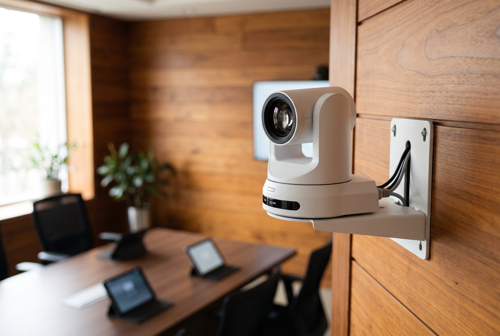
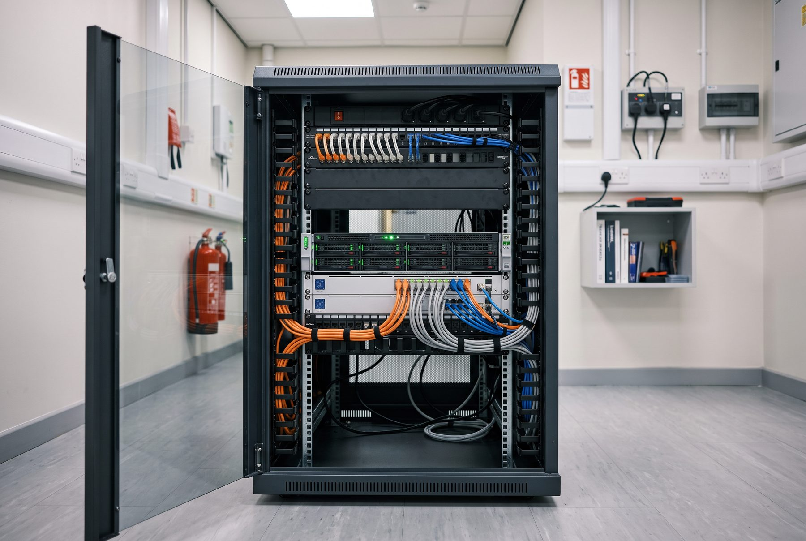

Jede Rolle ist eine eigene Oberfläche am selben Zustand. Was jemand darf, entscheidet der Kern — nie die Oberfläche. Die Oberfläche graut nur aus.
Wortmeldung, Mikrofon, Redeliste. Die Zahl gleichzeitig offener Mikrofone folgt aus der Einmessung des Saals, nicht aus einer Einstellung.
Offenes Mikrofon fährt die PTZ-Kamera über VISCA over IP auf den gelernten Preset des Platzes. Mit Mindeststandzeit, damit das Bild bei Zwischenrufen ruhig bleibt.
Höchstens ein Punkt ist in Arbeit. Bei einem nicht öffentlichen Punkt pausieren Stream und Aufzeichnung automatisch — gesteuert vom Sitzungszustand, nicht von einem Handgriff.
Beschlussfähigkeit wird beim Start geprüft und eingefroren. Bei geheimer Wahl existiert die Zuordnung Stimme zu Person nirgends — auch nicht im Protokoll.
Jede Wortmeldung, jede Stimme, jeder Technikeingriff als Kette, nur anfügbar. Der Protokollentwurf fällt am Ende der Sitzung von selbst an, gegliedert nach Tagesordnungspunkten.
Unterlagen je Tagesordnungspunkt, mit Vertraulichkeitsstufe, persönlichem Wasserzeichen und Zugriffsprotokoll in der Ereigniskette. Was eine Rolle nicht sehen darf, wird nicht ausgegraut, sondern nie gesendet.
Diese Regeln sind keine Meinungen, sondern Ergebnisse aus Akustik, Funktechnik und Verfahrensrecht. Sie lassen sich nicht wegkonfigurieren.
Bewusst nicht verwendet: vMix und OBS im Produkt, Windows als Kern, macOS als Dauerserver, eigene Kryptografie.

